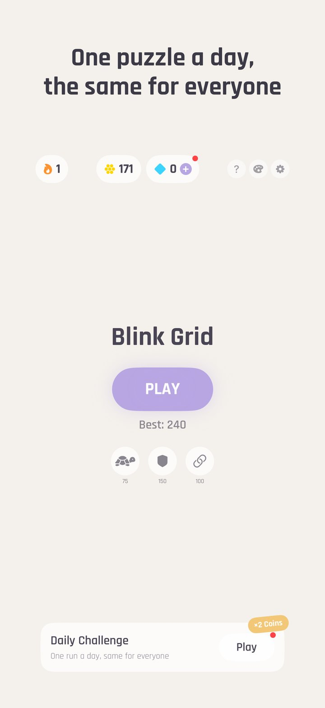
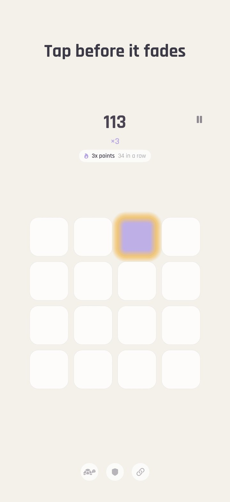
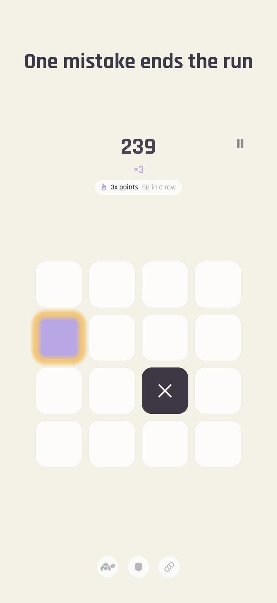
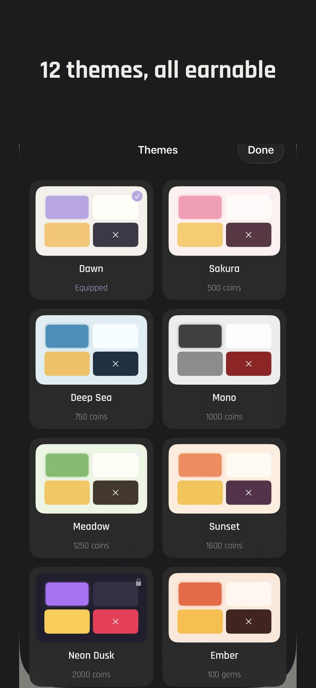
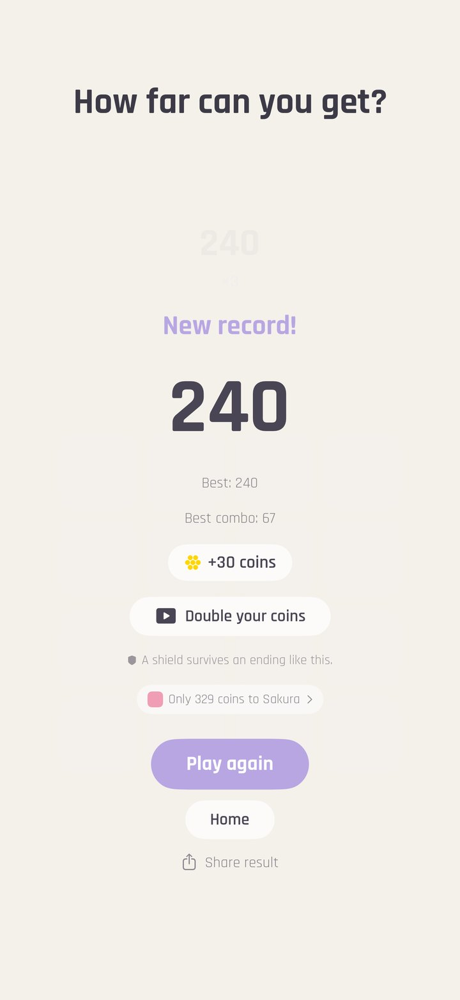
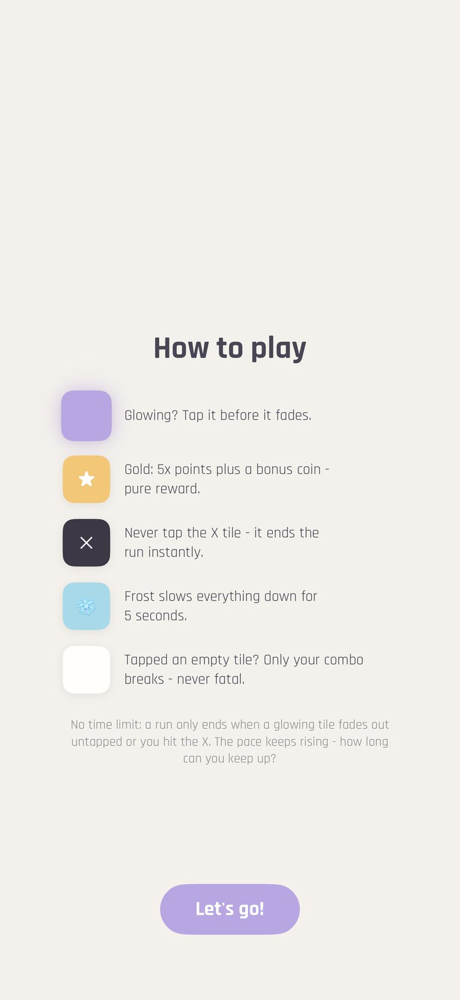

Download assets (screenshots EN + DE, app icon - ZIP, 3.8 MB)
App Store: apps.apple.com/app/id6795242744
Press contact: Lucas Hesseldieck - support@earlsstudio.com
Click for full resolution. Free to use in coverage of the game, credit "earls studio".






Copy-paste-ready texts. Do not edit ad hoc for individual outlets — if a text needs a variant, add it here so everything stays consistent.
Blink Grid is a minimalist reflex game for iPhone. Tiles light up, you tap them before they fade — that is the whole rulebook. One missed tile ends the run. Twelve handcrafted themes, a daily challenge identical for every player worldwide, and a combo that climbs the musical scale with you.
Blink Grid has one rule, and it is over in a second: a tile lights up, and you tap it before it fades. Miss one and the run is finished. Tap an empty tile and nothing bad happens — it costs your combo, never your life, because a reflex game that punishes twitchiness is just a game that punishes playing it. A run lasts thirty to sixty seconds. Longer, if you are good.
What keeps it from being a stopwatch is the texture on top. Gold tiles pay five times the points. Frost tiles buy a breather when the grid is closing in. An X tile has to be left alone, which is much harder than it sounds once your hands have learned to hit everything that moves. Fast, clean taps build a combo worth up to triple points — and the sound climbs the musical scale as it grows, so a good run audibly rises in pitch and a broken combo drops you back down. You hear yourself getting better before you read it on the scoreboard.
Around the endless mode sits a daily layer: one Daily Challenge per day, seeded identically for every player on earth, with its own leaderboard; a daily streak with growing rewards; and three daily missions. Twelve handcrafted colour themes, from Sakura to Midnight, are earned by playing. Boosts — Shield, Soft Start, Combo Saver — take the edge off a bad start.
Blink Grid runs fully offline, needs no account, and does not track its players: it never asks for the advertising identifier and shows only non-personalised ads. It is free-to-play, with optional gem packs, a starter pack, and a one-off purchase that removes advertising for good — and every item in the game can also simply be played for. Blink Grid is the third game from earls studio, the one-person Munich studio behind the puzzle games Odd One and ECHO, and the first of the three to carry a free-to-play economy.
| Name | Blink Grid (App Store: "Blink Grid - Reflex") |
| Tagline | Tap before it fades |
| Developer | earls studio (Lucas Hesseldieck), Munich, Germany |
| Platform | iPhone, iOS 17 or later (portrait) |
| Release | August 2026 — out now worldwide. Current version 1.0.1 (11 August 2026) |
| Price | Free-to-play. Optional in-app purchases: starter pack €2.99, gem packs €1.99–€19.99, "Remove Ads" €6.99. Everything in the game can also be earned by playing |
| Advertising & privacy | Non-personalised ads only; no ATT prompt, no advertising identifier, no cross-app tracking. Rewarded ads are opt-in (revive, doubler, daily gift); any purchase removes interstitials |
| Modes | Endless, Daily Challenge (identical worldwide, own leaderboard, streak), three daily missions |
| Mechanics | Tap tiles before they fade, one miss ends the run, mistaps cost only the combo, X tiles must be avoided, gold tiles (5× points), frost tiles (breather), combo up to 3× with a soundtrack that climbs the scale |
| Content | 12 handcrafted themes (Sakura to Midnight), boosts (Shield, Soft Start, Combo Saver) |
| Languages | English, German, French, Italian, Spanish (in-app language switch, applies instantly) |
| Features | Fully offline, no account, Game Center leaderboards (all-time, weekly, daily challenge — opt-in), iCloud sync, haptics, synthesized sound, light & dark mode |
| Category / Rating | Games › Casual, rated 4+ |
| Size | 6.9 MB |
| App Store | https://apps.apple.com/app/id6795242744 |
| Press contact | Lucas Hesseldieck, support@earlsstudio.com |
| Website | https://earls-studio.github.io/blinkgrid/ |
earls studio is a one-person game studio from Munich, founded in 2026 by Lucas Hesseldieck. It makes small, calm, carefully finished games. Odd One (July 2026) and ECHO (August 2026) are free of ads and tracking and financed by optional tips; Blink Grid (August 2026) is free-to-play with non-personalised ads and optional purchases.
Copy-paste-fertige Texte. Bitte nicht pro Anfrage spontan umformulieren — wenn eine Variante gebraucht wird, hier ergänzen, damit alles konsistent bleibt.
Blink Grid ist ein minimalistisches Reflex-Spiel fürs iPhone. Felder leuchten auf, du tippst sie, bevor sie verblassen — mehr Regeln gibt es nicht. Ein verpasstes Feld beendet die Runde. Zwölf handgemachte Farbwelten, eine weltweit identische Tages-Challenge und eine Combo, die die Tonleiter hinaufklettert.
Blink Grid hat eine einzige Regel, und die ist nach einer Sekunde vorbei: Ein Feld leuchtet auf, und du tippst es, bevor es verblasst. Verpasst du eines, ist die Runde zu Ende. Tippst du daneben, passiert nichts Schlimmes — es kostet die Combo, nie das Leben. Denn ein Reflex-Spiel, das hektisches Tippen bestraft, bestraft am Ende nur das Spielen selbst. Eine Runde dauert dreißig bis sechzig Sekunden. Länger, wenn du gut bist.
Was das Ganze von einer Stoppuhr unterscheidet, liegt eine Schicht darüber. Goldene Felder bringen fünffache Punkte. Frost-Felder verschaffen eine Verschnaufpause, wenn das Grid enger wird. Das X-Feld muss man in Ruhe lassen, was deutlich schwerer ist, als es klingt, sobald die Hände gelernt haben, auf alles zu tippen, was sich bewegt. Schnelle, saubere Treffer bauen eine Combo bis zum dreifachen Punktwert auf — und der Ton klettert mit ihr die Tonleiter hinauf. Ein guter Lauf steigt hörbar an, eine gerissene Combo fällt zurück. Man hört sich besser werden, bevor man es auf der Anzeige liest.
Um den Endlos-Modus herum liegt eine tägliche Schicht: eine Tages-Challenge pro Tag, für alle Spieler weltweit identisch aufgesetzt, mit eigener Bestenliste; eine Tages-Serie mit wachsenden Belohnungen; dazu drei tägliche Missionen. Zwölf handgemachte Farbwelten, von Sakura bis Midnight, werden erspielt. Boosts — Schild, Sanfter Start, Combo-Retter — nehmen einem schlechten Start die Schärfe.
Blink Grid läuft komplett offline, braucht kein Konto und verfolgt seine Spieler nicht: Es fragt nie nach dem Werbe-Identifier und zeigt ausschließlich nicht-personalisierte Werbung. Es ist Free-to-play, mit optionalen Gem-Paketen, einem Starter-Paket und einem einmaligen Kauf, der die Werbung dauerhaft entfernt — und alles im Spiel lässt sich auch erspielen. Blink Grid ist das dritte Spiel von earls studio, dem Ein-Personen-Studio aus München hinter den Rätselspielen Odd One und ECHO, und das erste der drei mit einer Free-to-play-Ökonomie.
| Name | Blink Grid (im App Store: „Blink Grid - Reflex") |
| Untertitel | Tippe, bevor es verblasst |
| Entwickler | earls studio (Lucas Hesseldieck), München |
| Plattform | iPhone, ab iOS 17 (Hochformat) |
| Release | August 2026 — weltweit erhältlich. Aktuelle Version 1.0.1 (11. August 2026) |
| Preis | Free-to-play. Optionale In-App-Käufe: Starter-Paket 2,99 €, Gem-Pakete 1,99–19,99 €, „Werbung entfernen" 6,99 €. Alles im Spiel ist auch erspielbar |
| Werbung & Datenschutz | Ausschließlich nicht-personalisierte Werbung; keine ATT-Abfrage, kein Werbe-Identifier, kein App-übergreifendes Tracking. Belohnte Videos sind freiwillig (Wiederbeleben, Verdoppler, Tagesgeschenk); jeder Kauf entfernt die Interstitials |
| Modi | Endlos, Tages-Challenge (weltweit identisch, eigene Bestenliste, Serie), drei tägliche Missionen |
| Mechaniken | Felder antippen, bevor sie verblassen; ein verpasstes Feld beendet die Runde; Danebentippen kostet nur die Combo; X-Felder meiden; Gold-Felder (5× Punkte), Frost-Felder (Verschnaufpause), Combo bis 3× mit Ton, der die Tonleiter hinaufklettert |
| Inhalte | 12 handgemachte Farbwelten (Sakura bis Midnight), Boosts (Schild, Sanfter Start, Combo-Retter) |
| Sprachen | Deutsch, Englisch, Französisch, Italienisch, Spanisch (Sprachwechsel in der App, sofort wirksam) |
| Features | Komplett offline, kein Konto, Game-Center-Bestenlisten (Allzeit, wöchentlich, Tages-Challenge — freiwillig), iCloud-Sync, Haptik, synthetisierter Sound, heller & dunkler Modus |
| Kategorie / Altersfreigabe | Spiele › Gelegenheitsspiele, freigegeben ab 4 Jahren |
| Größe | 6,9 MB |
| App Store | https://apps.apple.com/app/id6795242744 |
| Presse-Kontakt | Lucas Hesseldieck, support@earlsstudio.com |
| Website | https://earls-studio.github.io/blinkgrid/ |
earls studio ist ein Ein-Personen-Spielestudio aus München, gegründet 2026 von Lucas Hesseldieck. Es macht kleine, ruhige, sorgfältig fertiggestellte Spiele. Odd One (Juli 2026) und ECHO (August 2026) sind frei von Werbung und Tracking und über freiwillige Trinkgelder finanziert; Blink Grid (August 2026) ist Free-to-play mit nicht-personalisierter Werbung und optionalen Käufen.